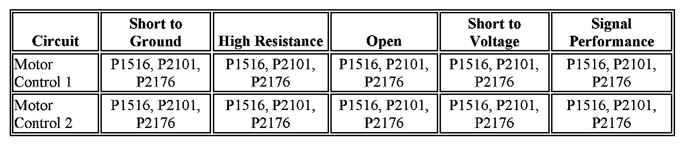

P2119
DTC P1516, P2101, P2119, or P2176
Diagnostic Instructions
- Perform the Diagnostic System Check - Vehicle prior to using this diagnostic procedure.
- Review Strategy Based Diagnosis for an overview of the diagnostic approach.
- Diagnostic Procedure Instructions provides an overview of each diagnostic category.
DTC Descriptors
DTC P1516: Throttle Actuator Control (TAC) Module Throttle Actuator Position Performance.
DTC P2101: Throttle Actuator Position Performance.
DTC P2119: Throttle Closed Position Performance.
DTC P2176: Minimum Throttle Position Not Learned.
Diagnostic Fault Information

Circuit/System Description
The engine control module (ECM) controls the throttle valve by applying a varying voltage to the control circuits of the throttle actuator control (TAC) motor. The ECM monitors the duty cycle that is required to actuate the throttle valve. The ECM monitors the throttle position (TP) sensors 1 and 2 to determine the actual throttle valve position.
Conditions for Running the DTC
P1516 and P2101
- The ignition is ON.
- The ignition voltage is greater than 8 V.
- The system is not in the Battery Save mode.
- The engine is running.
- DTC P0068 is not set.
- DTC P1516 and P2101 run continuously when the above conditions are met.
P2119
- The ignition is ON.
- The vehicle speed is 0 km/h (0 mph).
- The engine speed is less than 40 RPM.
- The engine coolant temperature (ECT) is 5-60°C (41-140°F).
- The intake air temperature (IAT) is 5-60°C (41-140°F).
- The ignition 1 voltage is greater than 10 V.
- The accelerator pedal position (APP) is less than 15 percent.
- DTC P2119 runs once per ignition cycle when the above conditions are met for greater than 1 s.
P2176
- The ignition is ON.
- DTCs P0120, P0122, P0123, P0220, P0222, P0223 are not set.
- DTC P2176 runs once per key cycle.
Conditions for Setting the DTC
P1516
The indicated throttle position does not match the predicted throttle position for greater than 0.5 s.
P2101
The indicated throttle position does not match the predicted throttle position for greater than 0.3 s.
P2119
The ECM determines that the throttle valve did not return to the rest position within 720 milliseconds.
P2176
The difference between the predicted and the actual throttle position is greater than a calibrated amount for greater than 1.5 s.
Action Taken When the DTC Sets
P1516, P2101, and P2176
- DTCs P1516, P2101, and P2176 are Type A DTCs.
- The control module commands the TAC system to operate in the Reduced Engine Power mode.
- A message center or an indicator displays Reduced Engine Power.
- Under certain conditions, the control module commands the engine OFF.
P2119
- DTC P2119 is a Type C DTC.
- The driver information center, if equipped, may display a message.
Conditions for Clearing the MIL/DTC
- DTCs P1516, P2101, and P2176 are Type A DTCs.
- DTC P2119 is a Type C DTC.
Diagnostic Aids
- Inspect for a condition in which the throttle valve may have been held open. For example, ice may have formed in the throttle bore causing the throttle valve not to close.
- A high resistance condition on the throttle position and throttle actuator control circuits could cause a DTC to set.
- A low battery condition may cause a DTC to set.
Circuit/System Verification
Note: A low battery voltage or charging system condition may cause a DTC to set.
1. Ignition ON, observe the DTC information with a scan tool. DTC P0120, P0122, P0123, P0220, P0222, P0223, P0562, P0621, P0622, or P2135 should not set.
-> If a DTC sets, refer to Diagnostic Trouble Code (DTC) List - Vehicle for further diagnosis.
2. Slowly depress the accelerator pedal from the rest position to the wide open throttle position (WOT) and release the pedal. Repeat the procedure several times. DTC P1516, P2101, P2119, or P2176 should not set.
3. Rapidly depress the accelerator pedal from the rest position to the wide open throttle position (WOT) and release the pedal. Repeat the procedure several times. DTC P1516, P2101, P2119, or P2176 should not set.
4. Engine idling, observe the TAC Command parameter with a scan tool. The reading should display greater than 0 %.
5. Operate the vehicle within the Conditions for Running the DTC to verify the DTC does not reset. You may also operate the vehicle within the conditions that you observed from the Freeze Frame/Failure Records data.
Circuit/System Testing
Warning: Turn OFF the ignition before inserting fingers into the throttle bore. Unexpected movement of the throttle blade could cause personal injury.
1. Ignition OFF, inspect the throttle body for the following conditions:
- A throttle blade that is not in the rest position.
- A throttle blade that is binding open or closed.
- A throttle blade that is free to move open or closed without spring pressure.
-> If a condition is found, replace the throttle body assembly.
Note: Disconnecting the throttle body harness connector causes additional DTCs to set.
2. Ignition OFF, disconnect the harness connector at the throttle body.
3. Ignition ON, verify that a test lamp does not illuminate between each motor control circuit listed below and ground.
- Motor control circuit terminal A.
- Motor control circuit terminal B.
-> If test lamp illuminates, test the motor control circuit for a short to voltage. If the circuit tests normal, replace the ECM.
4. Ignition ON, verify that a test lamp does not illuminate between each motor control circuit listed below and B+.
- Motor control circuit terminal A
- Motor control circuit terminal B
-> If the test lamp illuminates, test the motor control circuit for a short to ground. If the circuit tests normal, replace the ECM.
5. Ignition OFF, set the DMM to the 40 V scale, select the Min/Max Recording Mode, and set the Peak Min/Max response time to 1 ms.
Note:
- The DMM Min/Max Recording Mode and the response time of 1 ms must be reset after testing each circuit.
- The ignition must be OFF and the ECM completely powered down before testing each circuit.
6. Ignition OFF, measure the voltage using the DMM Min/Max Recording Mode function on each circuit listed below as the ignition is turned ON. The Max voltage should be within 1 V of B+.
- Motor control circuit terminal A.
- Motor control circuit terminal B.
-> If not within the specified range, test the circuit for an open/high resistance. If the circuit tests normal, replace the ECM.
7. If all circuits and connections test normal, replace the throttle body assembly.